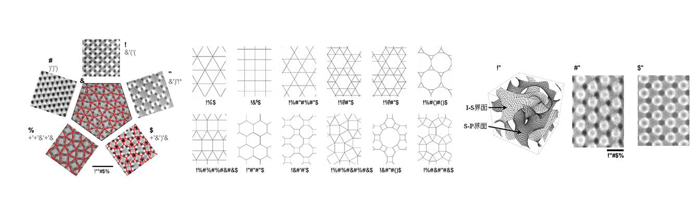

Symmetry in Polymers - Tricontinuous Cubic and Tiling Structures -
Yushu MATSUSHITA and Tomonari DOTERA
Kobunshi 57 (2008), pp.71-75
松下裕秀・堂寺知成
高分子 57 (2008) ２月号, pp.71-75
はじめに
理論的に古典結晶学が確立したのは19世紀のことであり、回転対称性と並進対称性をまとめて17の平面群（2次元空間群）または230の空間群として整理された。実験的に結晶対称性を初めて確認したのは、ラウエらが閃亜鉛鉱構造（ZnS）のX線回折斑点を見た1912年のことである。以来、物質構造解析と対称性とは切っても切れない関係にある。しかし、液晶相の多様な秩序構造に比べ、高分子1本を見ればその対称性は低く、結晶性高分子はあるものの、1本であれ集合体であれ、元来柔らかな高分子と結晶という観点での対称性の結びつきは一見弱く見える。
ブロック共重合体の自己組織化構造研究は、AB 型の最も単純なものからはじまり、組成変化にともなって球状ドメイン構造（３次元BCC格子）−柱状ドメイン構造（２次元６方充填格子）−交互ラメラ（１次元格子）間で構造転移することはあまりによく知られている。後に、より複雑な分子から様々な形態・周期を持つ自己組織化構造が発見されるにつれ、高分子でも高い結晶対称性が得られるようになった3)。この小論では、ABC線状高分子が作る立方晶系である共連続構造と、ABC星型高分子が作る2次元結晶であるアルキメデスタイリング構造に焦点をあて、高分子と結晶対称性の関わりを議論する。最後に、1980年代に金属合金系で発見された、結晶にあてはまらない秩序構造である準結晶にまで広がった高分子の世界に案内する。
phases.